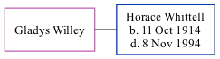

Gladys Willey, the wife of Horace George Whittell (the fourth cousin once-removed on the mother's side of Nigel Horne), and married Horace (a shipwright) in Medway, Kent, England around Nov 19391.
Citations
England & Wales Marriages 1837-2005 - Findmypast
Family Tree

Generated by ged2site. Last updated on Nov 13, 2024